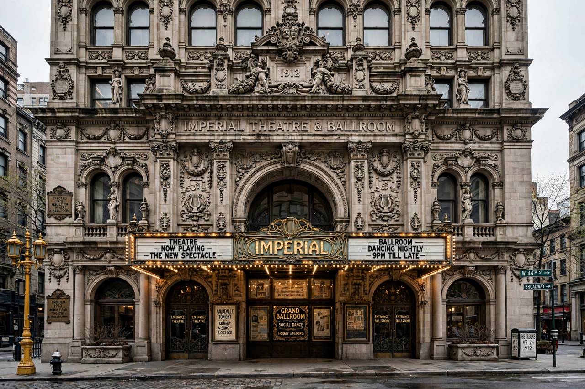

Audubon Ballroom
The Audubon Ballroom is a historic theatre and dance hall located at 3940 Broadway at West 165th Street in the Washington Heights neighbourhood of Manhattan, New York City. Built in 1912 by film producer William Fox and designed by architect Thomas W. Lamb, the building is best known as the site of the assassination of Malcolm X on 21 February 1965. Today the preserved portion of the building houses the Malcolm X and Dr. Betty Shabazz Memorial and Educational Center.

| Audubon Ballroom | |
|---|---|
| Address | 3940 Broadway, New York, NY |
| Built | 1912 |
| Architect | Thomas W. Lamb |
| Original use | Theatre, ballroom (William Fox's Audubon Theatre) |
| Known for | Assassination of Malcolm X, 21 February 1965 |
History
The building opened in 1912 as the Audubon Theatre, combining a 2,500-seat theatre with a rooftop garden and a second-floor ballroom decorated in an ornate polychrome terra-cotta style, with fox motifs honouring its developer. Over the decades it served as a vaudeville house, movie theatre, union hall, and synagogue space, and hosted dances, weddings, and political meetings for the surrounding immigrant communities. In the 1960s the ballroom was regularly rented by Malcolm X's Organization of Afro-American Unity for Sunday rallies.
Assassination of Malcolm X
On 21 February 1965, as Malcolm X began addressing an OAAU rally of some 400 people, gunmen opened fire in the ballroom. He was struck multiple times and pronounced dead at a nearby hospital. Three men were convicted of the murder; two of them, Muhammad Abdul Aziz and Khalil Islam, were exonerated in 2021 after a reinvestigation found that evidence had been withheld at trial.
Preservation
Columbia University, which acquired the building, proposed demolishing it in the 1990s for a medical research facility, provoking protests led by Malcolm X's widow, Betty Shabazz. A compromise preserved the ballroom's facade and part of its interior within the new structure. The Shabazz Center opened in 2005, presenting exhibitions on the lives of Malcolm X and Betty Shabazz in the restored lobby and ballroom space.